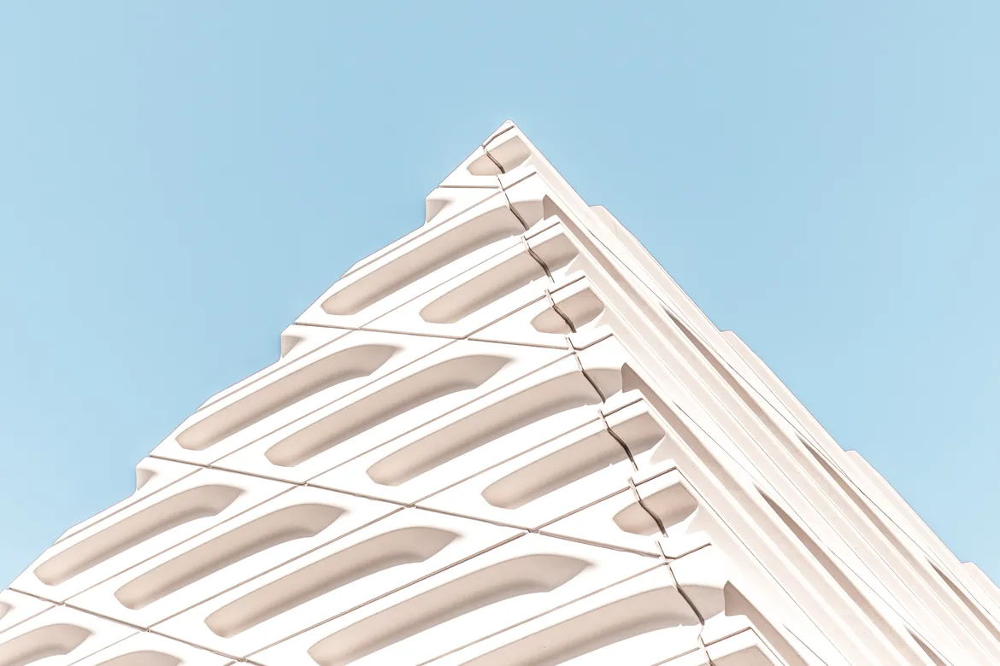
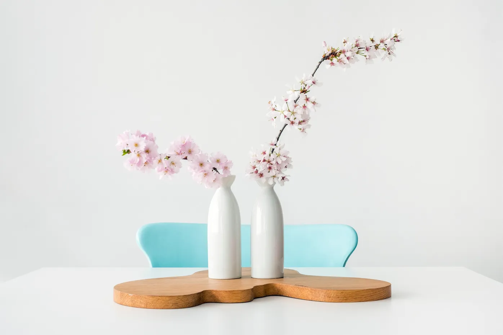
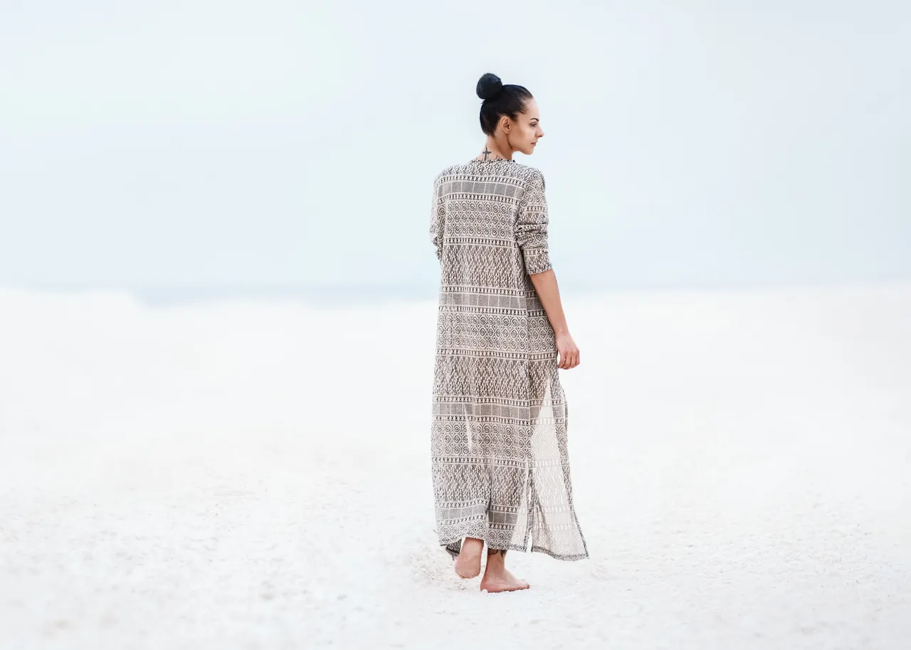

<section class="inspiration wrapper">
    <div class="inspiration_inner">
        <div class="inspiration_inner-text">
            <h2>INSPIRATION.</h2>
            <p>I find beauty and creativity in everything that surrounds us, from nature to household items.</p>
        </div>
        <div class="inspiration_inner-gallery">
            <div class="inspiration_inner-gallery-leftblock">
                
                <p>December 12, 2019 / Architecture</p>
                <a href="#" class="inspiration_inner-gallery-link">— Industrial buildings as modern art objects</a>
            </div>
            <div class="inspiration_inner-gallery-centerblock">
                
                <p>January 02, 2020 / Objects</p>
                <a href="#" class="inspiration_inner-gallery-link">— The impact of small details and colors</a>
            </div>
            <div class="inspiration_inner-gallery-rightblock">
                
                <p>March 09, 2020 / People</p>
                <a href="#" class="inspiration_inner-gallery-link">— Reflection of human nature in contemporary art</a>
            </div>
        </div>
    </div>
</section>
